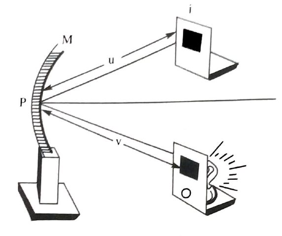
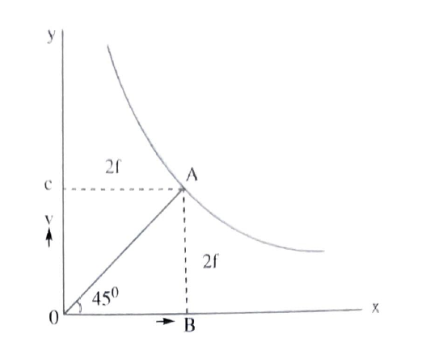
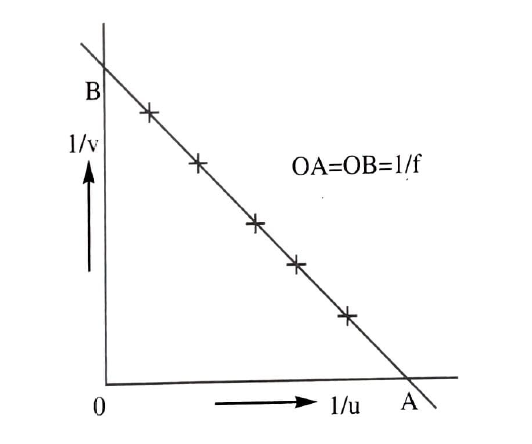

To determine the focal length of the concave mirror by (i)distant object method(ii)U.V method.
Concave mirror,meter scale,illuminated cross wire,screen and V-stand.
1) Distant object method: The given concave mirror is mounted vertically in the groove of the V-stand.The reflecting surface of the mirror is directed towards a distant tree,building or telegraph pole(object). The white screen is adjusted in front of the concave mirror till the clear images of the object is seen on it. The distance between the pole of the mirror and the screen gives the focal length f of the given concave mirror.
2)U.V method: The given concave mirror is placed vertically in the groove of V-stand.The illuminated cross wire will act as in object.The distance between the concave mirror and the object should be greater than its focal length.The cross wire'0' and the white screen 'I' are placed in front of the concave mirror on either side of its axis.The cross wire is placed at a distance 'u(say 30 cm) from the center P of mirror M. The white screen is adjusted till clear image of the cross wire is observed on it.The distance 'V' between the screen and the pole of the mirror is measured.The focal length f of the given concave mirror
determine using formula\(f=\frac{uv}{u+v}cm\)
The radius of curvature of the concave mirror R=2fcm.The experiment is repeated 6 or 7 times for different values of u and the value o 'f' is calculated in each case.The average value of 'f' given the focal length concave mirror.
U.V graph: A graph is drawn with the value of 'u' on the X-axis and the value of 'v' on the Y-axis using the same scale.A rectangular hyperbola(curve) is obtained. From the origin, a line OA is drawn bisecting the angle XOY to meet the curved at A.AC and AB are drawn perpendicular to both the axes. The value of AB and AC are the same each being equal to 2f
\(\therefore f=\frac{OB+OC}{4}\)
3) \(\frac{1}{u},\frac{1}{v}\) graph: A graph drawn between the value of \(\frac{1}{u} and \frac{1}{v}\) on X and Y- axis respectively with same scale will be a straight line cutting the axes at A and B.
OA=OB=\(\frac{1}{f}\) from which'f' can be calculated
\(\therefore f=\frac{2}{OA+OB}cm\)
